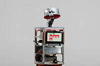
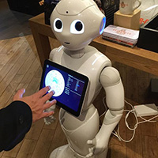
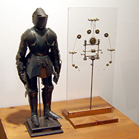
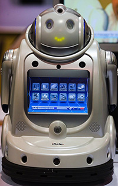
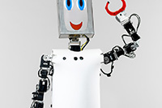
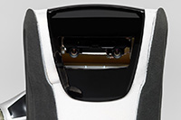
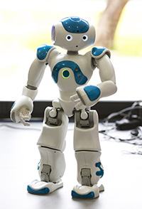
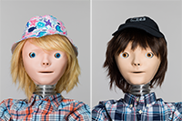

| Image |
Description |
Price |
|  |
Corde mine baisser préparer environ aventure sentiment. |
720 € |
|  |
Pepper the robot from Softbank Robotics in Japan. |
306 € |
|  |
Leonardo da Vinci. |
803 € |
|  |
IROBI robot complete with inbuilt tablet computer. |
126 € |
|  |
CHARLY (Companion Humanoid Autonomous Robot for Living with You) was designed by the Adaptive Systems Research Group at the University of Hertfordshire. It’s been used for human–robot interaction user studies, which involved the robot playing a version of rock-paper-scissors with passers-by. (CHARLY shouldn’t be confused with Charlie, another robot that Geoff met in the story.) |
1234 € |
|  |
Care-O-bot is a mobile robot assistant designed to actively support humans in their daily lives. It can be used for a variety of household tasks, for example delivering food and drinks, cleaning, and assisting with cooking. |
633 € |
|  |
In our study, students enjoyed the human-like interaction with the Nao humanoid robot. |
871 € |
|  |
KASPAR is a child-sized humanoid robot designed to help teachers and parents support children with autism. It has a minimally expressive human face capable of showing a range of simple expressions but with few of the complexities of a real human face. |
1195 € |